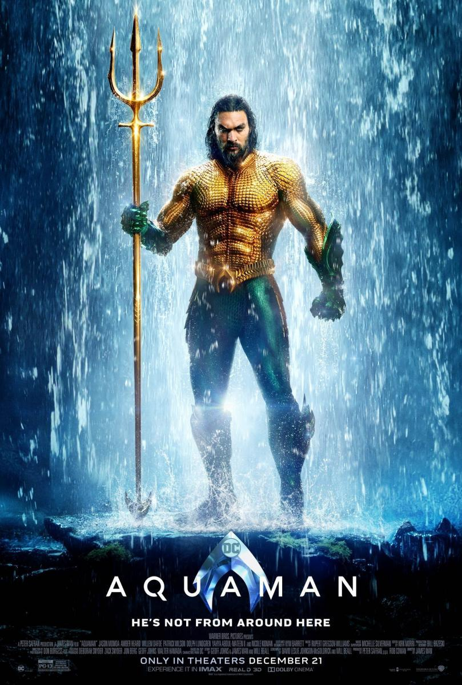

Descripción personal
Actualmente soy estudiante de 2º grado superior de infromática en el Ies Antonio Machado

Luego tendran el valor de decir que el de la foto no soy yo
Algunas de mis virtudes
- control de los peces
- nadar muy rápido
- respirar bajo el agua
- las lista desordenadas tambien son utiles
- sirven para enumerar pero in orden